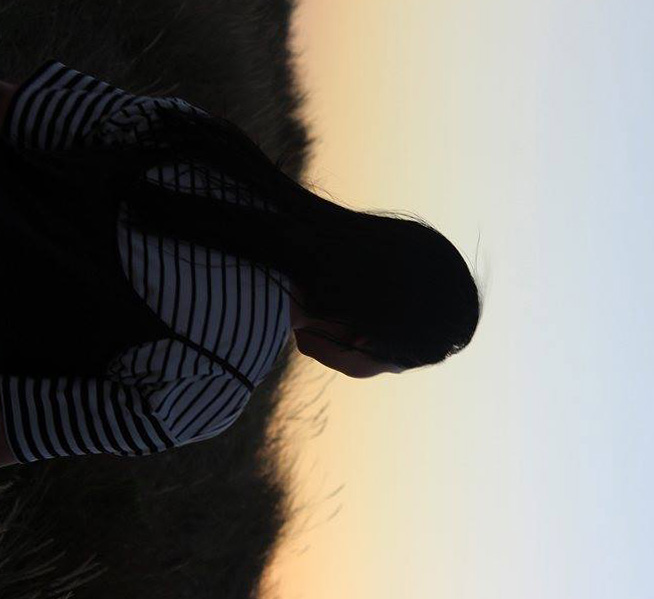

Kaira Cho-Repelis

"Psychoanalysis is confession without absolution" - Wilhelm Wundt
Click this to go to my blog
Welcome, welcome.
About Me
Skills
Contact
Body Background: Picture provided by Unsplash. I couldn't find the picture again to give the Photographer credit. Though, I have made sure other content on my pages in terms of media and gif types, I have created them myself using Piskel. Also the picture to the left is mine as it is of me.
I am a
Wanderer
Dreamer
'sort of' bookworm
Movie enthusiast
Foodie
Perfectionist
Hardworker